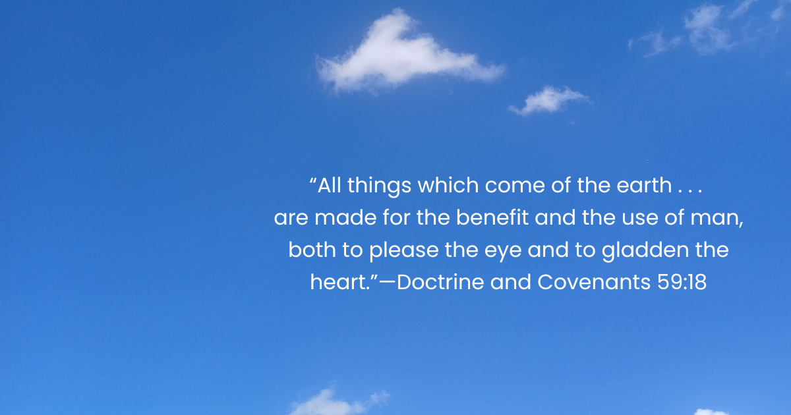

For my recreation, I photographed myself mimicking the pose from the original, hands clasped together with my chin resting on my fist, wearing a plain white shirt to match the subject in the original image. I positioned the camera at eye level to replicate the intimate, close-up framing of the Mel Curtis portrait. While my version was taken in colour and in a casual indoor setting rather than a professional studio, the core elements: the pose, the framing, and the contemplative expression, were all deliberately chosen to reflect the composition and mood of the original photograph.
